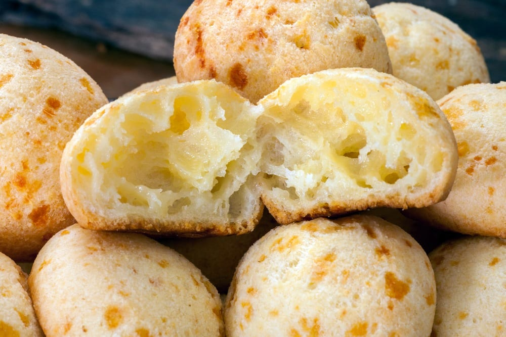
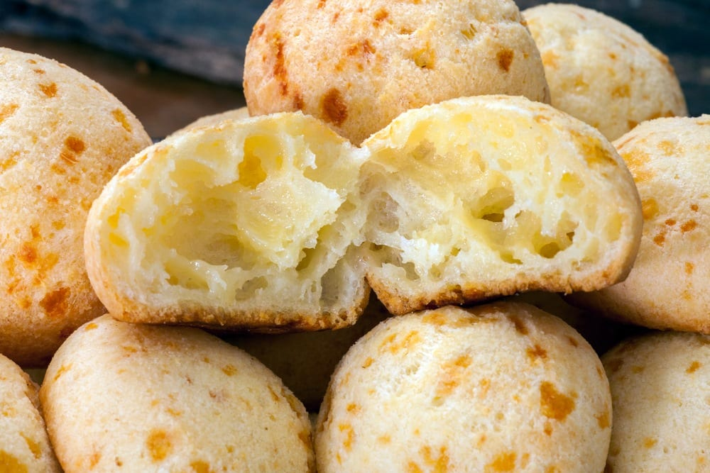

Menu

 


Delícias brasileiras servidas com amor e sabor, nossa especialidade inclui:
feijoada,
moqueca,
pão de queijo e muito mais.
Entradas
Coxinha de Frango
Massa crocante recheada com frango desfiado temperado.
Pastel de Queijo
Massa fina e crocante, recheada com queijo derretido.
Pão de Queijo
Pãezinhos leves e macios feitos com polvilho e queijo.
Acarajé
Bolinho frito de feijão fradinho, recheado com vatapá e camarão.
Pratos Principais
Feijoada Completa
Feijão preto cozido com carnes de porco, servido com arroz branco, farofa, couve refogada e laranja.
Moqueca de Peixe
Peixe cozido em leite de coco, azeite de dendê, cebola, tomate e pimentão, servido com arroz e
pirão.
Churrasco Misto
Variedade de carnes grelhadas, incluindo picanha, linguiça e frango, acompanhadas de arroz, farofa,
vinagrete e mandioca frita.
Bobó de Camarão
Camarões cozidos em um creme de mandioca, leite de coco e azeite de dendê, servido com arroz branco.
Escondidinho de Carne Seca
Purê de mandioca coberto com carne seca desfiada e gratinado com queijo coalho.
Acompanhamentos
Farofa de Banana
Farofa crocante com pedaços de banana frita.
Arroz de Carreteiro
Arroz cozido com carne seca e temperos.
Vinagrete
Mistura de cebola, tomate e pimentão temperada com azeite e vinagre.
Sobremesas
Brigadeiro
Doce de chocolate enrolado em granulado.
Pudim de Leite Condensado
Sobremesa clássica de leite condensado, ovos e açúcar, coberta com calda de caramelo.
Quindim
Sobremesa de coco e gemas, com textura macia e brilhante.
Cocada
Doce de coco ralado e açúcar, com variações de coco branco ou queimado.
Bebidas
Suco de Caju
Refrescante suco de caju natural.
Guaraná
Refrigerante típico brasileiro.
Caipirinha
Coquetel de cachaça, limão e açúcar.
Cafézinho
Café tradicional brasileiro, servido em pequenas xícaras.
Sobre Nós